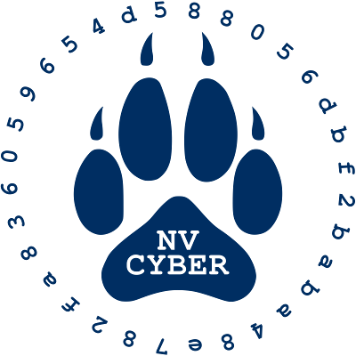

About
The Nevada Cyber Club is an ASUN recognized club based at the University of Nevada, Reno. The club was founded in Spring 2016 and is advised by Adam Reed. Our cyber competition coach is Bill Doherty.
Our objective is to teach cyber skills to students, and provide community outreach that will connect members to jobs in the field of Cyber Security (and Cyber in general) upon graduation.
As a club, we are dedicated to conducting research that will help to make advancements in policy, and serve to better inform our community and the cyber world at large.

Our objective is to teach cyber skills to students, and provide community outreach that will connect members to jobs in the field of Cyber Security (and Cyber in general) upon graduation.
As a club, we are dedicated to conducting research that will help to make advancements in policy, and serve to better inform our community and the cyber world at large.
Press
Nevada Cyber Club continues successful year at National Cyber League Competition
May 1, 2020 – Nevada Today – link“Individual results for the National Cyber League Competition are in, and the Nevada Cyber Club excelled. Occurring from April 3-5, twenty-two team members competed, and out of 5,905 competitors, three of them finished in the top 100.”
Nevada Students Top First Official National Cyber League College Rankings
September 17, 2019 – Infosecurity Magazine – link“America’s National Cyber League (NCL) has published official college rankings for the very first time, and the University of Nevada has come out on top.
Cyber-savvy students at the Reno-based university prevailed against 5,026 students from 419 schools across the nation to achieve victory in the NCL’s spring 2019 season. This impressive win contributed heavily to Nevada’s securing the pole position on the inaugural NCL leaderboard published last week.”
Coed clubs converge on Luxor for ‘hackathon’
August 14, 2019 – Las Vegas Review-Journal – link“Six teams of finalists participated in Wicked6: UNR; California State University, Northridge; East Coast Polytechnic Institute, Columbia; University of Central Florida; University of Colorado Boulder; and University of North Carolina Wilmington.
It was the last in a series of competitions, and the pool of college cyber teams began with 21. The top six qualified for Wicked6, and University of Colorado Boulder won.”
Cyber Club Scores Big in National Cyber League Competition
May 4, 2018 – Nevada Today – link“This April, a group of 24 students from the University of Nevada, Reno Cyber Club took part in the National Cyber League Spring competition and posted impressive scores. Club members took three of the top 11 spots and seven members finished in the top 10% of 3,350 competitors nationally. In the team competition, a group of five club members captured second place out of 264 teams.”
Cyber Club Has Makings of Nationally Competitive Team
December 21, 2016 – Nsights – link“The Nevada Cyber Club wrapped up its first full semester with two notable accomplishments. First, the Cyber Clinic project and delivery of the third and final Cyber Clinic for the Fall semester at the Governor’s Mansion. Second, are the results of the Fall 2016 season of the National Cyber League competition and the emergence of a cyber competition team at the University. Both accomplishments represent the culmination of the hard work and dedication of the Cyber Club members.”
Got a cyber problem? See a Cybermedic
November 23, 2016 – Reno Gazette Journal – link“The Nevada Cyber Club students, using the concept of a cyber teaching hospital as the organizing principle, are initially focusing on the problem of individual cyberhygiene. Just as washing your hands is good hygiene, certain cyber practices help protect against cyber problems. Improving cyberhygiene, just like washing hands, is good for the individual and the community. Researching good cybersecurity practices to develop cyber clinic guidance, then training to deliver the approved guidance to individuals in a cyber clinic setting provides students with an immersive learning experience. The purpose is clear: Develop student expertise, so they can help individuals and organizations improve their cybersecurity through improving cyberhygiene.” ~ James Elste, Faculty Advisor, Nevada Cyber Club
Make online security part of everyday routine
August 17, 2016 – Las Vegas Review-Journal – link“It is important to know the security of the device one is using. If it’s a smartphone, for example, it should have a password to gain access and the privacy features should be turned on. Also, one should be aware of the vulnerable information they are inputting into a device, such as Social Security number, driver’s license or bank account numbers, and know whether the software they are downloading, such as all those smartphone apps, is secure.” ~ Joan Patterson
James Elste emphasized that it all boils down to being “educated and aware.”
The article outlines basic safety tips and where to learn more.